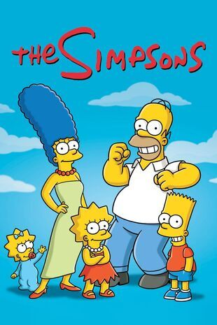
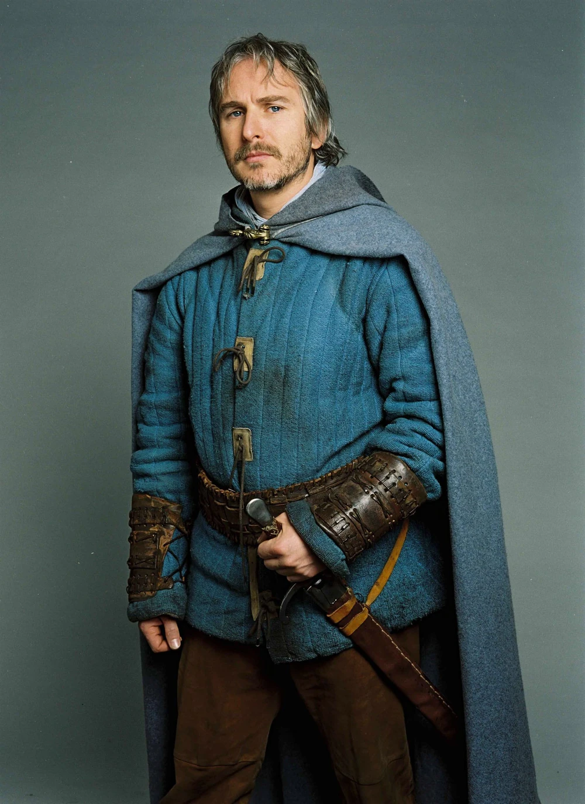

Bienvenue chez les fans !
Trois fans, trois passions, un seul site. Ici, chacun vous fait découvrir l'univers qu'il adore : la famille la plus célèbre de Springfield, le chevalier le plus loyal (et le plus perdu) de Kaamelott, et les drôles d'oiseaux qui pompent, pompent, pompent… Choisissez votre univers et bonne visite !

Fan n°1Les Simpson
Homer, Marge, Bart, Lisa et Maggie : plongez dans Springfield, la ville de la plus longue série animée de l'histoire.
Découvrir →
Fan n°2Perceval (Kaamelott)
Chevalier de la Table Ronde, maître du Sloubi et du Sirop : venez apprendre les jeux du pays de Galles. C'est pas faux !
Découvrir → Fan n°3
Fan n°3
Les Shadoks
Ils pompent, ils raisonnent de travers et ils sont culte : la timeline et les épisodes de nos oiseaux préférés.
Découvrir →